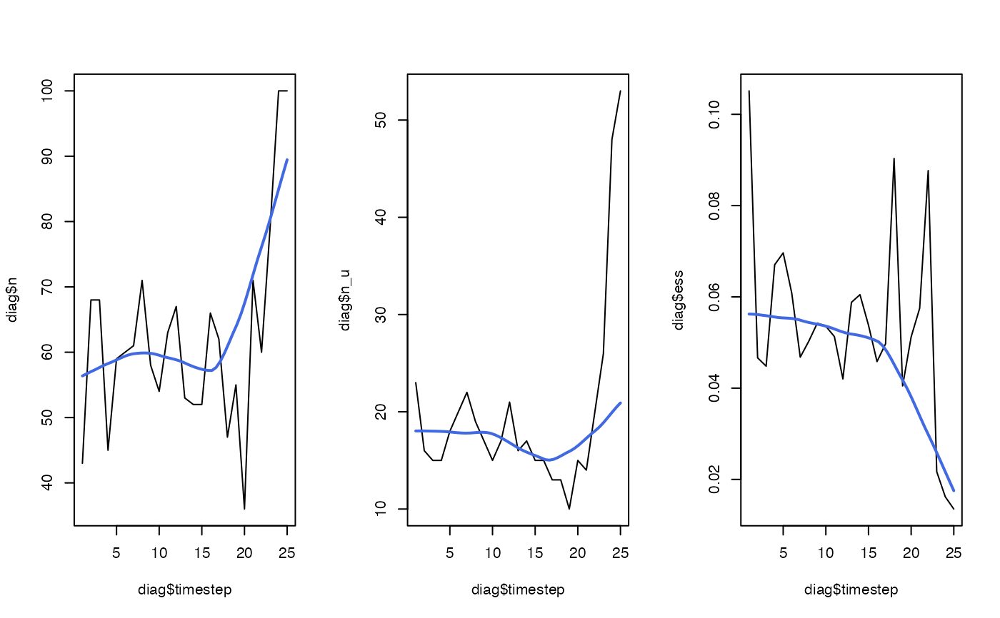

This function calculates diagnostics from particle samples from pf_backward_killer().
pf_backward_killer_diagnostics(.history, ...)Particle samples, provided in any format accepted by .pf_history_dt().
Arguments passed to .pf_history_dt(), excluding .collect with is necessarily TRUE.
The function returns a data.table with the following columns:
timestep---an integer that defines the time step;
n---an integer that defines the number of particles;
n_u---an integer that defines the number of unique location samples (see .pf_diag_nu());
ess---a double that defines the effective sample size (see .pf_diag_ess());
Particle diagnostics are fully described in pf_diag.
pf_forward(), pf_backward_killer() and pf_backward_sampler() implement the forward simulation and the backward pass;
pf_forward_diagnostics() and pf_backward_killer_diagnostics() collect diagnostics;
.pf_diag_() functions are internal routines that calculate diagnostic statistics;
#### Example (1): Calculate diagnostics from objects in memory
diag <- dat_pfbk() |> pf_backward_killer_diagnostics()
head(diag)
#> timestep n n_u ess
#> 1: 1 49 17 0.07211279
#> 2: 2 65 13 0.04819651
#> 3: 3 60 16 0.05545625
#> 4: 4 56 17 0.05488710
#> 5: 5 59 15 0.07538771
#> 6: 6 60 13 0.05712730
#### Example (2): Calculate diagnostics from parquet files
pfb_folder <- dat_pfbk_src()
diag_2 <- pf_backward_killer_diagnostics(pfb_folder)
stopifnot(all.equal(diag, diag_2))
#### Example (3): Analyse diagnostics
# Define helper function
plot_loess <- function(x, y,
xlab = deparse(substitute(x)),
ylab = deparse(substitute(y)), ...) {
plot(x, y,
xlab = xlab, ylab = ylab,
type = "l")
lines(loess.smooth(x, y), col = "royalblue", lwd = 2)
}
# Plot time series
pp <- par(mfrow = c(1, 3))
plot_loess(diag$timestep, diag$n)
plot_loess(diag$timestep, diag$n_u)
plot_loess(diag$timestep, diag$ess)

par(pp)